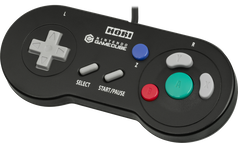
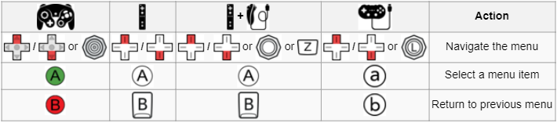
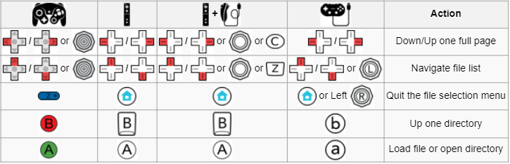
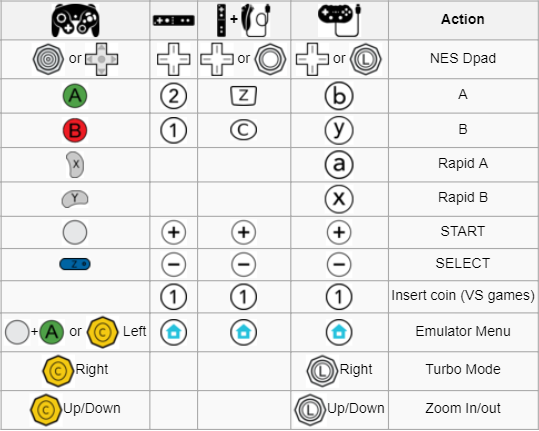

Hardware and miscellaneous software mods.
Retro Wii Homebrew Guide
required: Nintendo Wii, SD card
Retro Wii Information
With some online resources, I've flushed out a way to make any Wii into a retro emulator. It's free, and it works great using emulators and ROMS you can find online. You can view the paper documentation here. If you're interested in me doing this to your Wii, I can give you a price if you ask. I'll also need a 16GB SD Card and 8GB USB to fit the games.
Please remember that some games are duplicates on different systems. But still, that’s a total of 5,025 Games on one system! So many great games here.
Getting Started
When launching your Wii, you will be greeted with the Homebrew menu. This is where custom software made for the Wii can be launched. Here, you will find the Emulators, and some other software I included. Be aware that you can use the Homebrew Browser app to add new apps if you ever desire (internet required).
How do I launch my traditional disc games?
Easy. Once you are at the Homebrew menu, load USB Loader GX. Once that is loaded, you will see a new menu. This menu replaces the traditional Wii menu, and can be controlled with devices other than the Wiimote. To load games from the Disc Drive, click the disc icon located on the very far right of the top menu bar. Wait for it to load for a few seconds. Next, click the ‘mount’ option. After a few seconds, the game will launch. If you wish to rip the ISO file onto the storage device, you can also do that.
What is an Emulator?
Simple. An Emulator pretends to run another consoles operating system, therefore allowing it to run any game the original system could. Think of the word simulate. Emulators are Simulators for operating systems.
Controller and Controls
You can use these officially supported controllers on all of the Emulators:
1. Wiimote
2. Wiimote and Nunchuck
3. Gamecube Controller
4. Wii Classic Controller
However, these are not the only supported controllers. You can use theoretically any third party controller that uses the above as a base. For instance, if you have a Gamecube controller that plugs into a Wiimote, you can use that. Or, one of my personal favorite controllers for older emulation, the Hori Gamecube Controller:

HORI Controller
The next image will give the actual controls for the software. I would personally suggest using the Wiimote in the menus, and a controller for actual gameplay. Most of the Emulators use the same type of control scheme. The controls are as follows:

In Menus

File/Game Select

In-Game
Adding games
Adding games is easy. To add N64 games, plug in the USB, and transfer the rom file to the not64 folder, and then the roms folder. It will then appear on the Wii. For all other games, plug the SD Card into your computer. Depending on the console the game is on, open the emulators folder, and then open the roms folder, and place the game inside there. You should now see your games inside the folder!
PriiLoader
You can really skip this. PriiLoader is the underlying software that prevents your Wii from ever being destroyed, should this rare event ever even occur. It makes your Wii recoverable, and also launches the starting homebrew software at startup. This is only here in case you ever accidentally get to the menu. In the case you get to the PriiLoader menu, don’t panic. Just restart the Wii without changing any settings. If you ever need to recover the Wii, you can get to this menu by holding the reset and power keys at the same time while turning on the Wii after a hard shutdown.
Emulator Instructions
This area will help explain how you actually play the games. Don’t worry, it’s very simple, despite the wall of text. If you are looking for a game in the software, keep in mind that literally everything is organized alphabetically. Homebrew menu, game library, it’s all alphabetical.
What emulator should I use if I have multiple of the same game on different systems?
For this example, I will use the flying bulletstorm game 1942. 1942 has been released on almost all of the consoles that this Wii can Emulate. However, the quality of the emulator will be deciding factor on how you want to load it. The highest quality emulators here are FCE Ultra GX, Snes9x GX, and Visual Boy Advance GX. If the game exist on any of those, it should be great. If, like 1942, the game is on all three, use Snes9x GX. This version of the game should be the newest and updated more than previous editions. If however you want to play 1942 like it was on the arcade games, then load it using M.A.M.E.
FCE Ultra GX, Snes9x GX, and Visual Boy Advance GX
All three of these superb softwares were made sharing the same source code, so how they operate on the user level is mostly the same. To launch a game, you just simply click on the game’s cover with the Wiimote. This will then immediately boot into the game. Saving is fairly straightforward as well once you use the program.
Wii7800
Not much to elaborate on here either. Just select ‘Load Cartridge’ and then select the game in which you want to play. Feel free to look around the settings so they better suit your needs.
M.A.M.E
Simply select the arcade game you would like to start, and it will begin. Be aware that since this is emulating arcade games on a 4:3 or 16:9 aspect ratio, some games may look strange or be unplayable.
Not64
This is simply an insanely well made emulator. But it’s still experimental on the Wii. First, i’ll explain to you how to use it. On the USB I was provided, I loaded 151 Games onto it. All other games are saved on the SD Card, but N64 games are much larger. To load a game in the Emulator, just go to Load ROM, Load from USB, and select the game. This will load in into the memory. Then, just click start game to begin.
Now, their are some downsides to Not64. It’s still in development, and many games will be too glitchy to play, or simply just won’t start at all. Their are list online about how well games work, but just try it yourself. I have tested Super Smash Bros 64 on it, and against only 1 enemy it runs at 100% speed and is basically seamless.
Let me also elaborate on the controls for Not64. The gamecube controller is directly mapped, 1-to-1 with the N64 controller, so the controls should be the same. The Wiimote is a little more finicky, and it requires the nunchuck, but with a small amount of testing you should get the hang of it.
Also, make sure the USB is plugged into Slot 1 on the Wii, or else the games folder will not be found. This is the USB slot on the back that is located closest to the side of the Wii. In other words, when you are looking at the back of the Wii, it is the one on the right side.